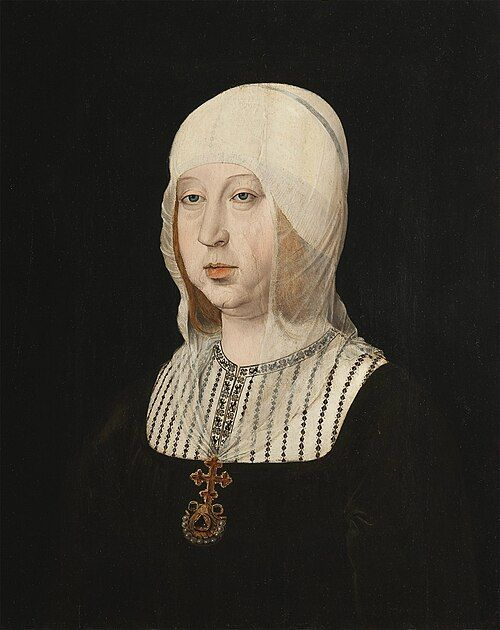

En poques paraules
L'arribada a Amèrica va plantejar una pregunta nova: quins drets tenien els pobles indígenes? D'aquest debat va néixer el dret internacional modern.
Els principals canvis
- 1512: Leyes de Burgos, primeres normes sobre el tracte als indígenes.
- 1542: Leyes Nuevas, que prohibeixen esclavitzar els indígenes.
- L'Escola de Salamanca, amb Francisco de Vitoria, desenvolupa el dret de gents.
- 1567: Nueva Recopilación de les lleis de Castella.
Anècdota
A la Junta de Valladolid (1550–1551) Bartolomé de las Casas i Juan Ginés de Sepúlveda van debatre davant l'emperador si era legítim conquerir els indígenes. Va ser un dels primers grans debats públics sobre drets humans.
Curiositat
Cada regne conservava les seves lleis: el rei de Castella era alhora comte de Barcelona i havia de jurar les Constitucions catalanes.
Personatges

Isabel I de Castilla1451 – 1504Reina de CastellamonarquiaFrancisco de Vitoriac. 1483 – 1546Teòleg i pare del dret internacionalmonarquia Bartolomé de las Casas1484 – 1566Defensor dels pobles indígenesmonarquia
Bartolomé de las Casas1484 – 1566Defensor dels pobles indígenesmonarquia Pau Claris1586 – 1641President de la GeneralitatmonarquiaDDomingo de Soto1494 – 1560Teòleg i jurista de l'Escola de Salamancamonarquia
Pau Claris1586 – 1641President de la GeneralitatmonarquiaDDomingo de Soto1494 – 1560Teòleg i jurista de l'Escola de Salamancamonarquia